Fanarts Danganronpa
Resumen del trabajo
El año pasado, 2020, cursé la asigantura Expresión Artística con la cual disfruté y aprendí mucho. Como trabajo final tuvimos que realizar unos fanarts con la temática de "estado de emergencia climática" usando el arte de un videojuego. Yo escogí Danganronpa Trigger Happy Havoc porque me parece que es un gran juego y el arte es muy bonito y característico.
Todo el trabajo está realizado con Krita y por si no conoces el juego, te dejo imágenes de referencia que me ayudaron mucho a la hora de crear los fanarts.
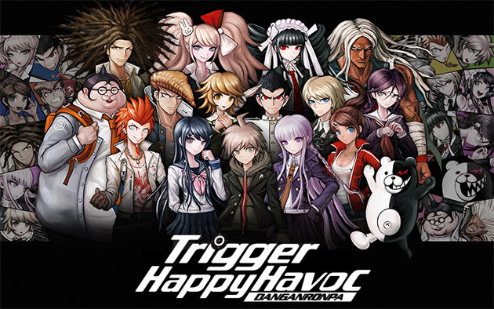 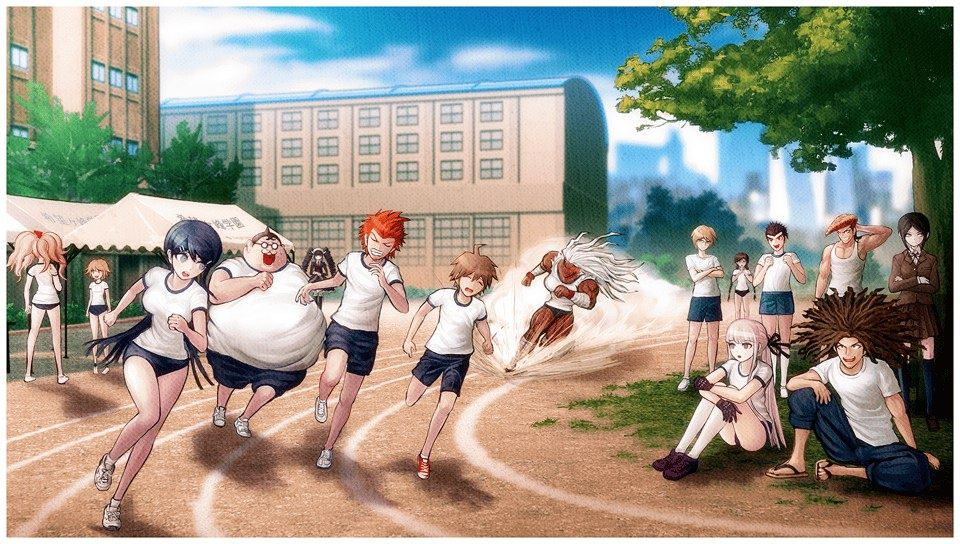 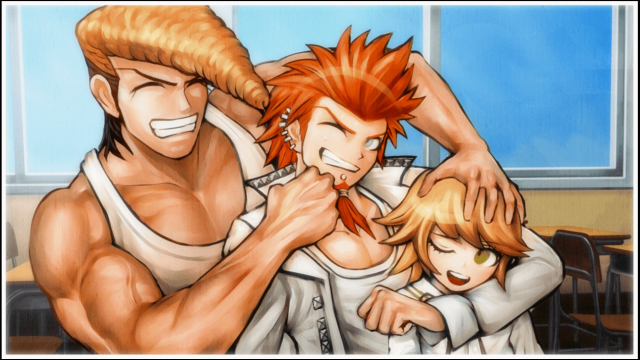 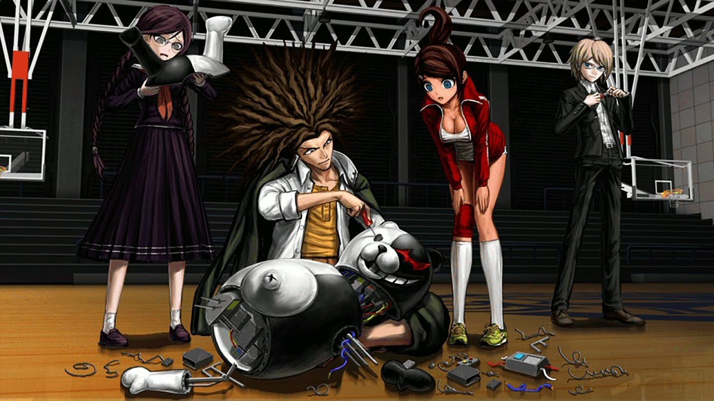
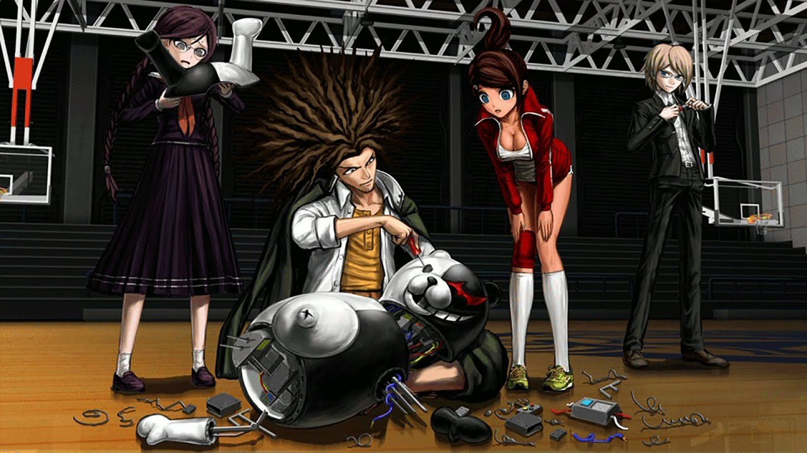

Todas las imágenes vienen de esta página web.
Fanart 1: Deshielo de los polos
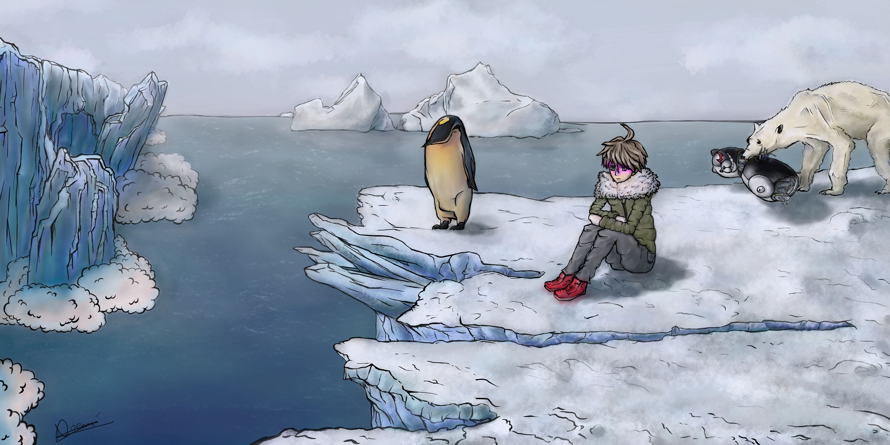La temática principal es el deshielo en los extremos del planeta debido al calentamiento global. Este derretimiento del hielo marino causa graves consecuencias globales: aumento del nivel del mar, derretimiento del permafrost y estructura inferior expuesta a la erosión, liberación de grandes cantidades de CO2 y metano que se encuentran atrapados en las capas de nieve congelada, alteración de los patrones atmosféricos y un impacto en la biodiversidad.
En la composición se puede observar como unos polos se están derritiendo como consecuencia de un aumento de la temperatura. Por otro lado nos encontramos con un estudiante de la academia Kibougamine, Makoto Naegi, que se encuentra mirando desolado tal escena. También he querido hacer una referencia a las especies que viven en estas zonas usando a un pingüino y a un oso polar.
Como consecuencia a las drásticas reducciones de hielo marino, los osos polares pueden cazar menos focas y por tanto tienen menores probabilidades de sobrevivir. Esto se ve reflejado en la composición por un oso polar sujetando un robot de Monokuma, ya que ha sido lo único que ha podido encontrar como recurso. El oso es capaz de comer algo que perjudique su salud con tal de tener algo de alimento y esto puede representar la desesperación de los animales por conseguir volver a la normalidad.
Pasos que seguí
- Boceto de la composición
- Boceto con imágenes de referencia. 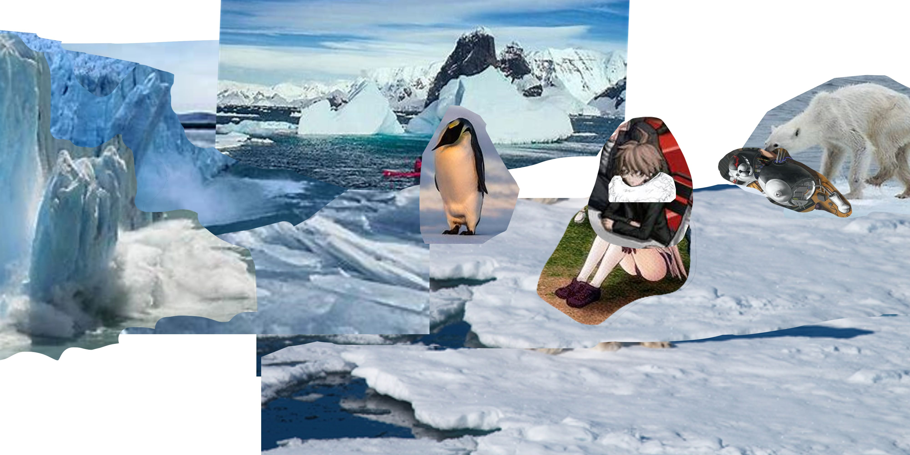
- Dibujo a línea. 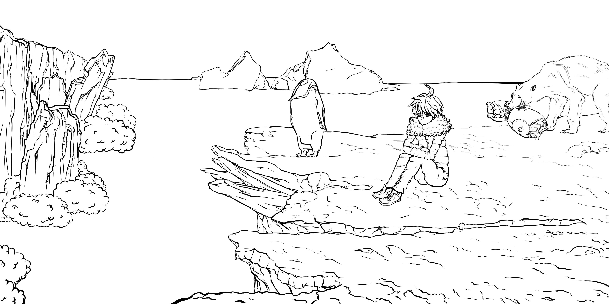
- Aplicación del claroscuro para resaltar profundidad y volúmenes. 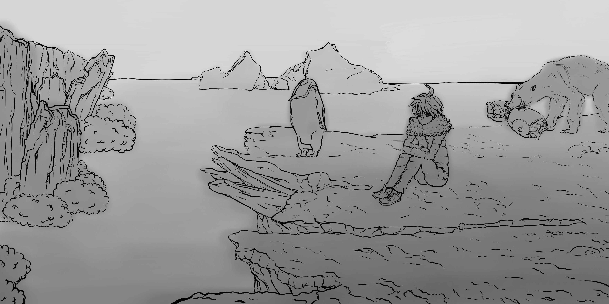 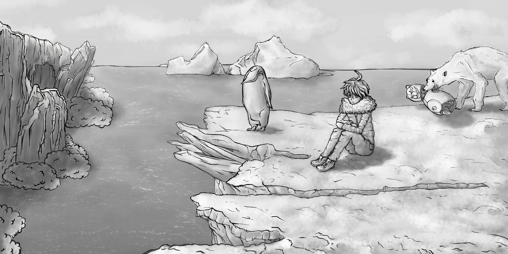
- Aplicación del color 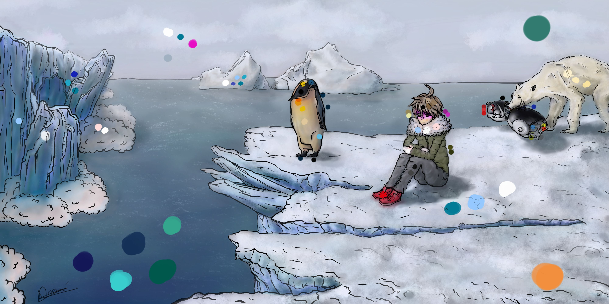
Contiene dos puntos de fuga, horizonte a 2 tercios - vista serena, composición no simétrica, la ley de la balanza (equilibrio de pesos), al menos 3 recorridos visuales y 2 centros de interés.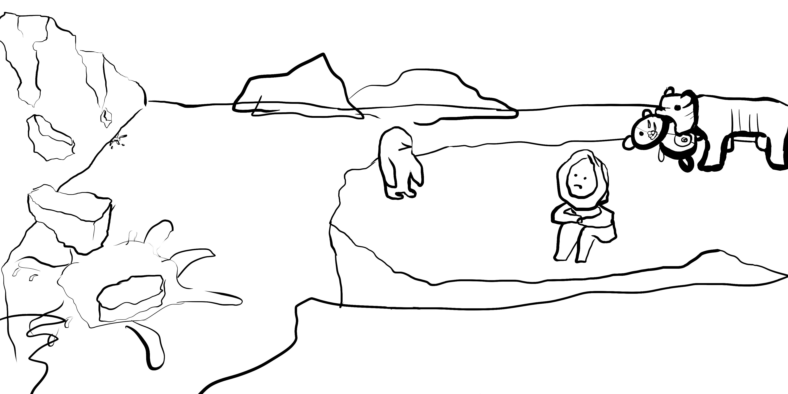
Fanart 2: Contaminación marina y oceánica
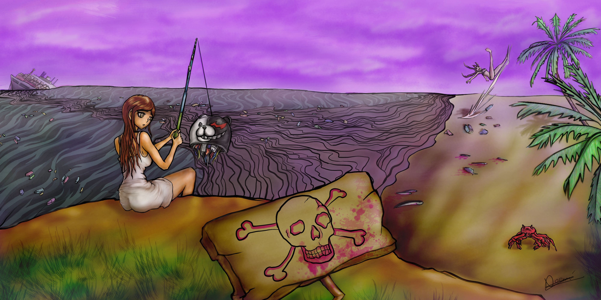El tema principal es la contaminación marina y óceanica. Esta se produce al introducir de manera directa o indirecta sustancias contaminantes y perjudiciales en el medio marino. Suelen arrojarse de manera desmesurada herbicidas, plaguicidas, fertilizantes, detergentes, químicos, hidrocarburos, plásticos y aguas residuales entre otros.
Estos restos provocan un gran impacto ambiental que no solo daña a los seres vivos marinos y a los recursos que obtenemos de estas aguas, sino que también pone en peligro la salud humana. Este riesgo, se debe principalmente a que muchos de los desechos que se vierten en el mar, acaban siendo alimento directo o indirecto de muchas especies marinas que consumimos, por lo que podríamos acabar ingiriendo restos de las sustancias que nosotros mismos hemos desechado
Esta contaminación se refleja muy bien en el dibujo por los plásticos que se encuentran tanto flotando en el mar, como depositados en las costas de alrededor. Para hacer también referencia al juego, he usado a Asahina pescando una chatarra, la cabeza de Monokuma.
Como toque de humor en el fondo también podemos observar como Toko Fukawa se resbala con un plástico. Esto es una crítica hacia la población y de cómo se deshacen de la basura, ya que si no lo hacen correctamente les puede perjudicar.
También podemos ver en el horizonte un barco naufragando del cual sale petróleo. Este componente es muy tóxico y tiene consecuencias en la biodiversidad marina, ya que hay peces muertos en las costas y un cangrejo manchado de petróleo.
Pasos que seguí
- Boceto de la composición
- Boceto con imágenes de referencia. 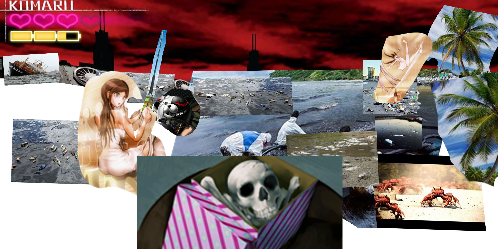
- Dibujo a línea. 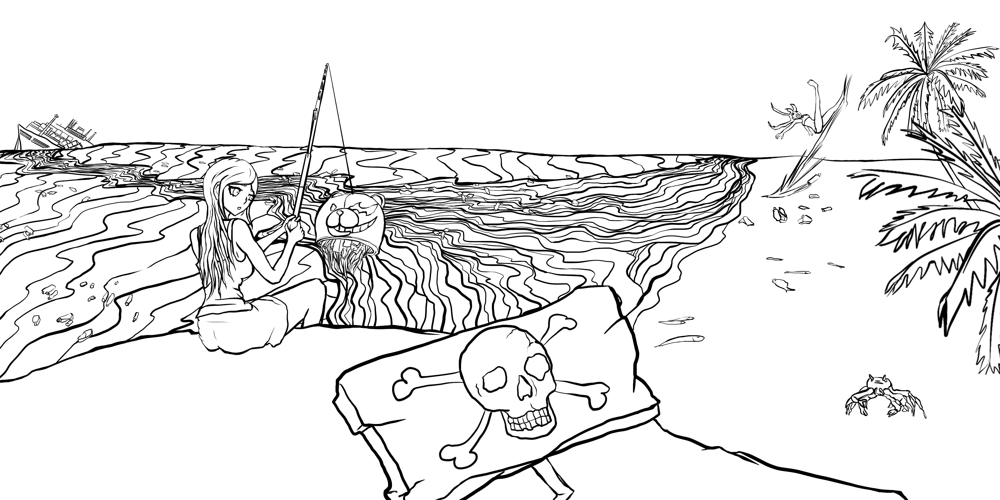
- Aplicación del claroscuro para resaltar profundidad y volúmenes. 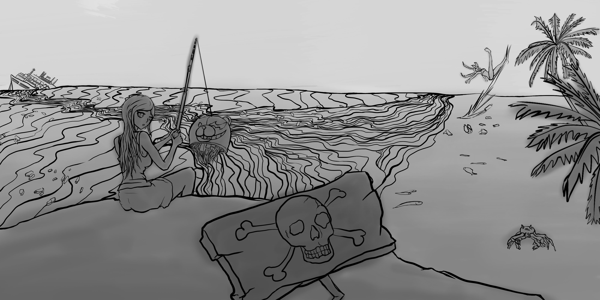 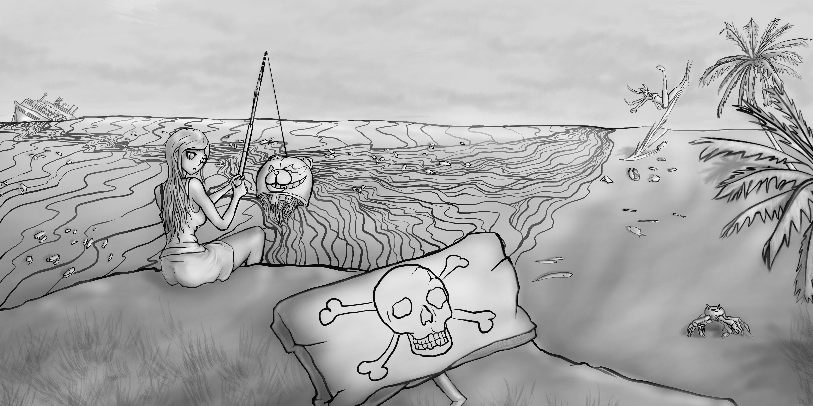
- Aplicación del color 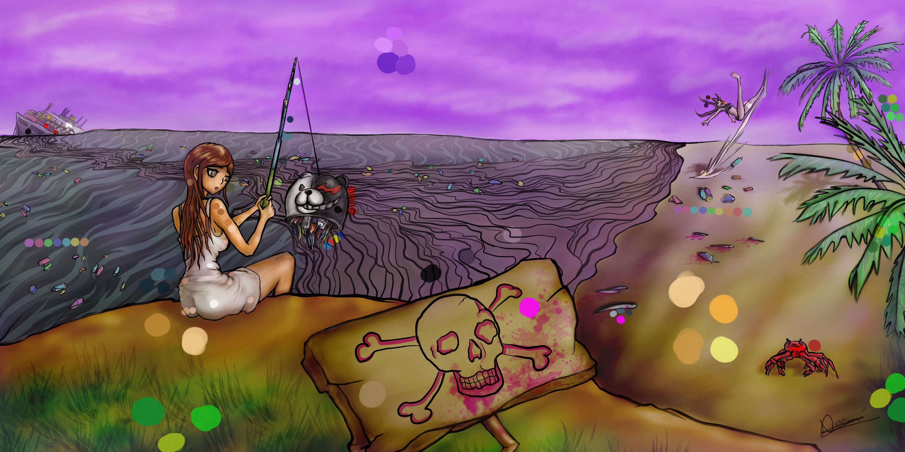
Contiene los elementos de la composición anterior.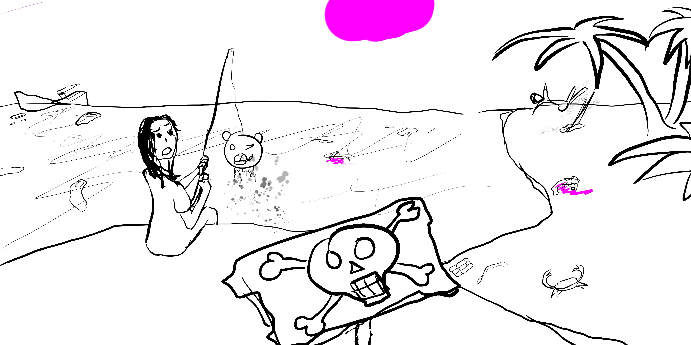